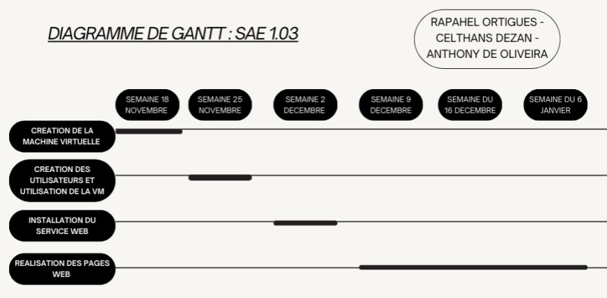

Pour pouvoir expliquer comment on a réparti nos tâches, on a mis en place un diagramme de GANTT. Le diagramme de GANTT est un outil utilisé en ordonnancement et en gestion de projet, permettant de visualiser dans le temps les diverses tâches composant un projet. Il a permis de nous aider pour mieux gérer notre temps et donc à l'optimiser en étalent les différentes tâches sur plusieurs semaines. Tâches du travail. On a ainsi pu terminer notre projet dans les temps sans avoir une surcharge de travail au dernier moment.
Voici donc le diagramme de GANTT pour notre projet :

Ce diagramme de GANTT a été réaliser pour 4 taches réparties sur 6 semaines par ce schéma :
- Création de la machine virtuelle : Cette tâche débute la semaine du 18 novembre et se termine la semaine du 25 novembre.
- Création des utilisateurs et utilisation de la machine virtuelle (VM) : Commence également la semaine du 18 novembre et se poursuit jusqu’à la semaine du 25 novembre.
- Installation du service : Prévue à partir de la semaine du 25 novembre jusqu’à la semaine du 2 décembre.
- Réalisation des pages web : Une tâche de longue durée débutant la semaine du 2 décembre et se terminant la semaine du 6 janvier.